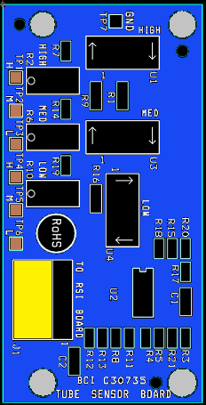
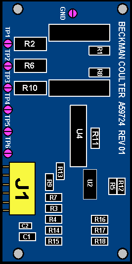
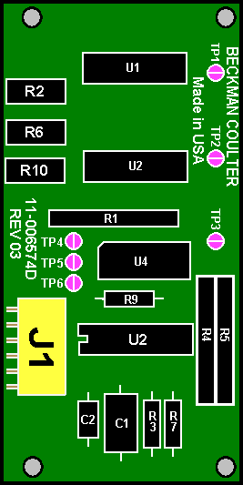

Adjusting Cup/Tube Reader Voltage
This procedure describes how to adjust the sample carousel cup/tube reader voltage.
| If the board revision is | Then perform the procedure |
|---|---|
|
Three potentiometer cup/tube reader PCB adjustment Refer to Step 1 for voltage adjustments |
|
Three potentiometer cup/tube reader PCB adjustment Refer to Step 2 for voltage adjustments |
|
Single potentiometer cup/tube reader PCB adjustment Refer to Step 3 for voltage adjustments |



-
To perform the three potentiometer cup/tube reader PCB C30735 adjustment, follow these steps:
- Remove the carousel hold-down screws, and pull the module out of the instrument far enough to allow access to the cup/tube reader PCB.
- Disable the motors from the user interface.
- Attach the positive lead on the digital volt meter to Test Point 3 (bottom sensor output voltage) on the cup/tube reader PCB and the negative lead to the ground test point on the carousel module interface PCB.
- Load an empty sample tray (1-99 series) onto the sample carousel.
- Manually rotate the sample carousel to empty position 1 in 1-99 rack and measure the voltage at TP3. The voltage should be 3.25 V DC to 3.45 V DC.
- Repeat the process to measure the voltage at TP1 and TP2 for empty position 5 in loaded 1-99 rack. Each of these voltages should be 2.15 V DC to 2.35 V DC.
-
If any of the voltages are incorrect, then adjust the voltage using the potentiometer:
- R2 for TP1 (top sensor),
- R6 for TP2 (middle sensor)
- R10 for TP3 (bottom sensor)
- Load a 13X100-mm tube into sample position 5 on the sample tray. Manually rotate the tube to the cup/tube sensors.
- The voltage at TP1, TP2, and TP3 should be greater than 4.0 V DC with the 13X100-mm tube in front of the sensors. This voltage is not adjusted. If the voltage is incorrect, then recheck the no tube position V DC settings. If the "sample cup present voltage" is too low, then replace the cup/tube reader PCB and repeat all of the steps for the three potentiometer cup/tube reader PCB adjustment.
- When the no tube position V DC settings and Cup-present voltage check are correct, remove the loaded tray and reinstall the carousel module.
-
To perform the three potentiometer cup/tube reader PCB A59724 or 6574D or higher adjustment, follow these steps:
- Remove the carousel hold-down screws, and pull the module out of the instrument far enough to allow access to the cup/tube reader PCB.
- Disable the motors from the user interface.
- Attach the positive lead on the digital volt meter to Test Point 3 (bottom sensor output voltage) on the cup/tube reader PCB and the negative lead to the ground test point on the carousel module interface PCB.
- Load an empty sample tray (1-99 series) onto the sample carousel.
- Manually rotate the sample carousel through one full rotation while measuring the voltage at TP3.
- The voltage measured at TP3 should be no greater than 1.25 V DC without a tray or sample or when the sensor is viewing an empty slot.
- Repeat the process to measure the voltage at TP1 and TP2 through one sample carousel rotation. Each of these voltages should be no greater than 1.25 V DC without a tray or sample.
-
If any of the voltages are incorrect, then adjust the voltage using the potentiometer:
- R2 for TP1 (top sensor),
- R6 for TP2 (middle sensor)
- R10 for TP3 (bottom sensor)
Note: When viewing the tray ribs between the empty cup/tube slots, the voltage approaches 5 V DC. - Load a 13X100-mm tube into sample position 2 on the sample tray. Manually rotate the tube to the cup/tube sensors.
- The voltage at TP1, TP2, and TP3 should be greater than 3.9 V DC with the 13X100-mm tube in front of the sensors. This voltage is not adjusted. If the voltage is incorrect, then recheck the 1.25 v setting. If the "sample cup present voltage" is too low, then replace the cup/tube reader PCB and repeat all of the steps for the three potentiometer cup/tube reader PCB adjustment.
- When the 1.25 V setting and Cup-present voltage check are correct, remove the loaded tray and reinstall the carousel module.
-
To perform the single potentiometer cup/tube reader PCB adjustment, follow these steps:
- Remove the carousel hold-down screws, and pull the module out of the instrument far enough to allow access to the cup/tube reader PCB.
- Disable the motors from the user interface.
- Attach the positive lead on the digital volt meter to Test Point 3 (bottom sensor output voltage) on the cup/tube reader PCB and the negative lead to the ground test point on the carousel module interface PCB.
- Load an empty sample tray (1-99 series) onto the sample carousel.
-
Manually rotate the sample carousel through one full rotation while measuring the voltage at TP3. The voltage measured at TP3 should be no greater than 1.25 V DC without a tray or sample or when the sensor is viewing an empty slot in the tray. If the voltage is incorrect, then adjust the voltage using the potentiometer.
Note: When viewing the tray ribs between the empty cup/tube slots, the voltage approaches 5 V DC.
- Load a 13X100-mm tube into sample position 2 on the sample tray. Manually rotate the tube to the cup/tube sensors.
-
The voltage at TP3 should be greater than 3.9 V DC with the 13X100-mm tube in front of the sensors. This voltage is not adjusted.
- If the voltage is incorrect, then recheck the 1.25 V setting.
- If the Cup-present voltage is too low, then replace the cup/tube reader PCB and repeat the single potentiometer cup/tube reader PCB adjustment.
- After the 1.25 V setting and Cup-present voltage check are correct, remove the loaded tray and reinstall the carousel module.
-
If the cup / tube reader voltage was adjusted, then verify system performance.
-
Home the sample carousel and load a sample tray of the 1-99 series:
- Place a 13X 75 tube in position 1.
- Place a 13X100 tube in position 2.
- Place a 2-mL sample cup in position 3.
-
Move the sample carousel to the Cup/Tube Reader location. Select
Advance CCW until the 13X75-mm tube in position 1 is in front of the cup/tube reader.
Ensure that the top tube light is off and both the bottom and middle tube lights in the user interface are on.
-
Select
Advance CW until the 13X100-mm tube in position 2 is in front of the cup/tube reader.
Ensure that all three tube lights in the user interface are on.
-
Select
Advance CW until the 2-mL cup in position 3 is in front of the cup/tube reader.
Ensure that the bottom tube light in the user interface is the only light that is on.
-
Select
Advance CW until the empty position 4 is in front of the cup/tube reader.
Ensure that all tube detector lights in the user interface are off.
- Home the sample carousel and remove the sample tray.
Detector / Indicator 13X75 Primary Tube 13X100 Primary Tube 2-ml Sample Cup Empty Tray Position Top Off On Off Off Middle On On Off Off Bottom On On On Off -
Home the sample carousel and load a sample tray of the 1-99 series:
-
Verify system operation.
-
Perform the required system verification.
Note: Refer to the Instrument Verification Protocol for Access Service Repair document.
- Contact your local support organization with any questions or concerns.
-
Perform the required system verification.
- Ensure that the cover interlock bypass key is removed from the front cover interlock switch. Do not leave the key at customer site.